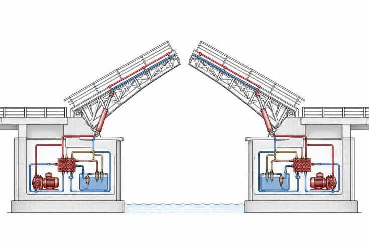

Boceto
Boceto del sistema

Boceto del sitio
Encabezado: logo y menú (Inicio, Misión y visión, Proyecto, Contacto, Boceto)
Portada: título, frase corta y botón «Ver el proyecto»
Tres ideas: Física, Ingeniería, Movilidad
Galería del prototipo
Pie de página